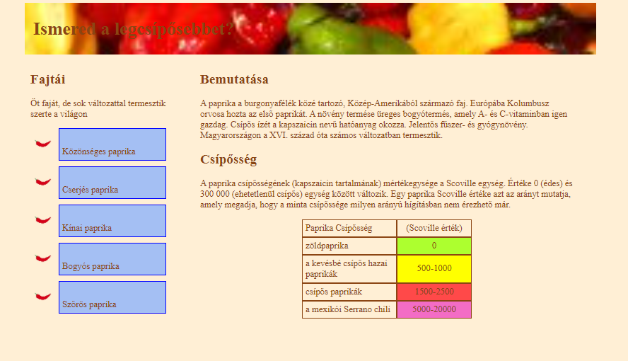
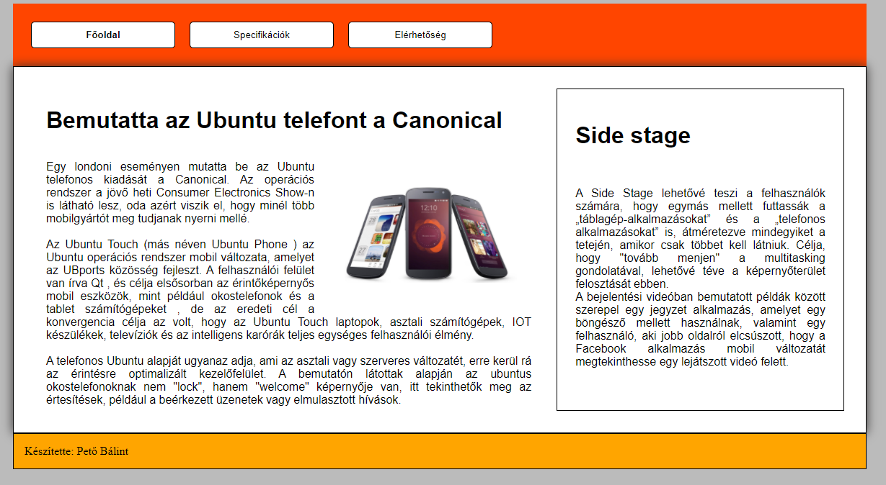

Balatongyörök
A balatoni önkormányzat megbízásából készítettük ezt az oldalt melyen bemutatjuk a környék nevezetesebb kilátóit az ide látogatni kívánók számára.
Paprika
A magyarországon megrendezett éves paprika fesztivára készítettük ezt az oldalt. Oldalunkon bemutatjuk a nevezetes parikákat és azok csípősségi erejét.
Lottó
Ezel az oldalunkal a lottó szerelmeseinek kedveskedünk. Oldalunkon fellelhető az elmúlt évek lottóhúzásainak eredményei, a leggyakoribb húzások és sok egyébb érdekes adat.
Ubuntu
Az ubuntu oldalunkal az ubuntu használatát szeretnénk népszerűsíteni. Oldalunkon a telefonos ubuntu specifikációiról és annak használatáról írtunk.